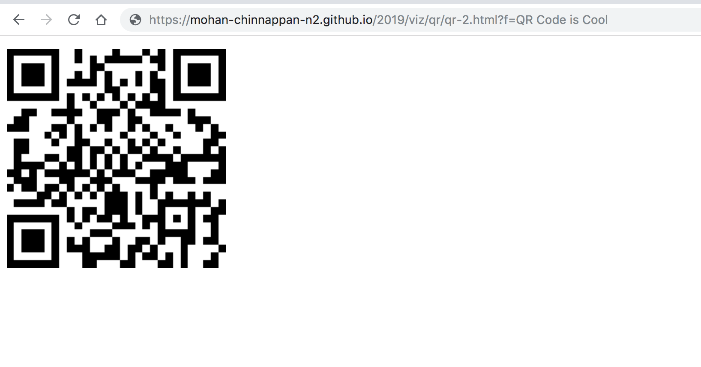
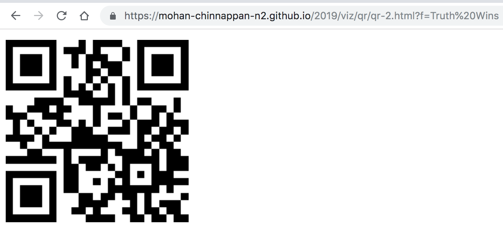

QR code (abbreviated from Quick Response Code) is the trademark for a type of matrix barcode (or two-dimensional barcode) first designed in 1994
for the automotive industry in Japan.
A barcode is a machine-readable optical label that contains information about the item to which it is attached.
Here is a sample QR Code for the quote:
An ounce of practice is worth more than tons of preaching. - Mohandas K Gandhi
QR Code tool is also available as Lightning Web Component (LWC).
Please contact us for the code.
Demo rendering recordId of the Record Page in QR Code:
Just pass the query parameter f to this url as shown below: https://mohan-chinnappan-n2.github.io/2019/viz/qr/qr-2.html?f=QR Code is Cool Click to test
QR code is rendered as shown below:

You can embed qr tool as iframe:
QR code is rendered as shown below in your application where it is iframed:
